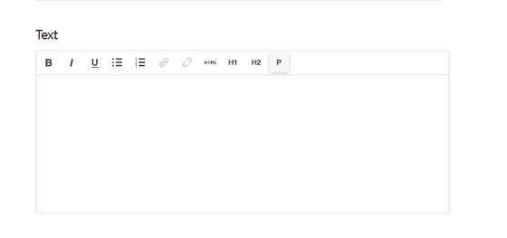

The text editor is simple to use. It functions in a similar way to basic text editing in word processing packages.
You have the following options (icons from left to right in the above image):
1. Text formatting:
B - Bold I - Italic U - Underline - use underlining with caution as people expect underlined text on webpages to be links.
2. Lists:
Bulleted list Numbered list
3. Links:
Link icon. Highlight the text you would like to create the link on and click on this icon, to bring up a box giving you various link options. See the tutorial on creating External and Internal Links for further details. Remove link icon. Click somewhere in the link text and click on this icon to remove the link.
4. HTML:
HTML - If you are familiar with HTML you might want view your page in HTML. Do this by clicking on this icon.
5. Text sizes:
H1 - larger underlined heading H2 - smaller heading P - this is the default setting for paragraph text.
Copying and pasting text from Word to the Text editor can cause formatting problems. You can often stop this from happening by copying and pasting the text into Notepad and then into the Text Editor. This should remove the extra formatting which causes problems.